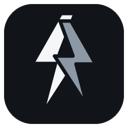

هر تست، مستقل
پینگ، سرعت، موقعیت و دسترسی را جداگانه بررسی کنید؛ با نتیجههای زنده و توقف آزمون.

DicodePingاتصالهایتان را مرتب کنید، کیفیت هر مسیر را بسنجید و با آگاهی متصل شوید. یک فضای خلوت برای دسکتاپ و اندروید.
نمای مفهومی رابط • مقادیر نمونهاند
پینگ، سرعت، موقعیت و دسترسی را جداگانه بررسی کنید؛ با نتیجههای زنده و توقف آزمون.
فهرست تازهٔ پروفایلها و تنظیمات تببندیشده؛ هماهنگ با تم روشن و تیره.
Xray، sing-box و Mihomo بههمراه نسخهٔ دسکتاپ ارائه میشوند؛ با فایلهای بررسی صحت.
آمادهسازی خودکار سرورهای پیشفرض، انتخاب بر اساس تست واقعی و مسیرهای Aether و Psiphon؛ با کنترل کامل از تنظیمات.
دستگاهتان را انتخاب کنید؛ برای ویندوز نصبکننده و برای بیشتر گوشیها ARM64 مناسب است.
نصبکنندهٔ کامل، همراه هستههای اتصال.
دانلود نصبکنندهنسخهٔ بدون نصب ZIPبستهٔ مستقل برای توزیعهای دسکتاپ لینوکس.
دانلود برای لینوکسحالت TUN به دسترسی مدیر نیاز دارد.بستهٔ متناسب با پردازندهٔ مک خود را انتخاب کنید.
Apple Silicon · ARM64Intel · x64 ZIPنسخهٔ امضاشده برای گوشیهای دارای پردازندهٔ ۶۴ بیتی ARM.
دانلود APK · arm64-v8aبرای گوشیهای قدیمی و دستگاههای Intel یا شبیهسازها.
ARM 32-bit armeabi-v7a ↙Intel 32-bit x86 ↙Intel 64-bit x86_64 ↙در اندروید، فایل مناسب معماری دستگاه را نصب کنید. نتیجهٔ آزمون امنیت، بررسی تنظیمات پیکربندی است و آزمون تحریم دسترسی شبکه را نشان میدهد.
خبرهای نسخهها را دنبال کنید یا مشکلها را با جزئیات در گیتهاب گزارش دهید.